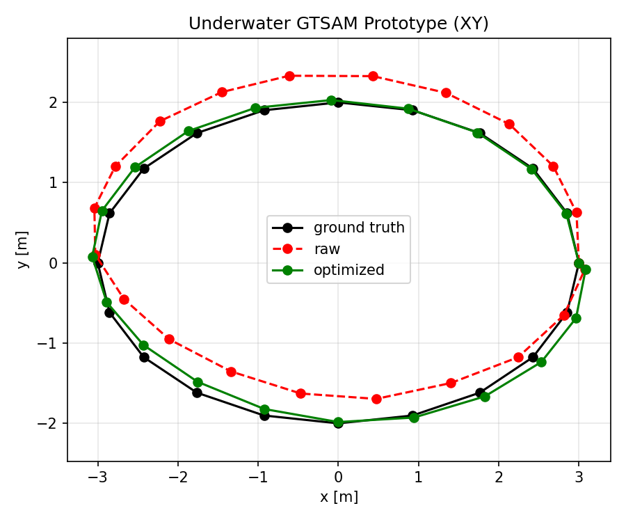
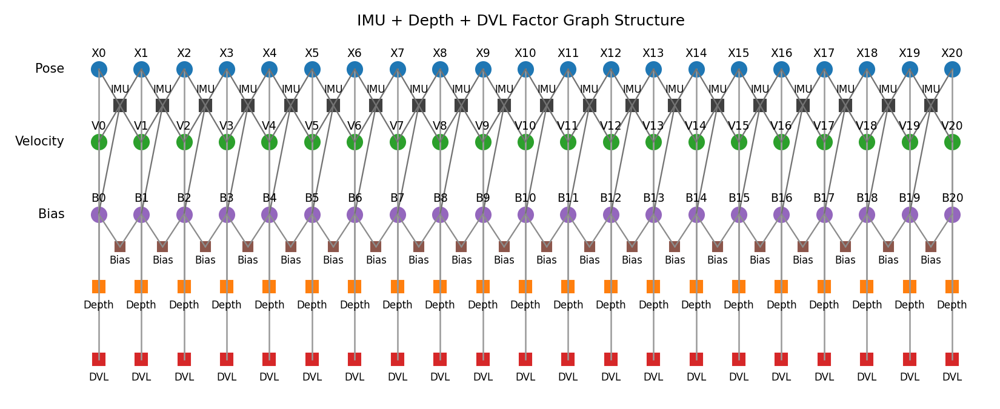

1
Synthetic underwater multi-sensor graph
generate_synthetic_dataset.py
run_gtsam_localization.py
The main underwater-oriented offline prototype. Built on GTSAM's inertial and factor-graph workflow, then adapted to the Barracuda measurement layout.
- IMU motion propagation / preintegration
- depth constraints
- DVL velocity constraints
- pose / velocity / bias state layout
- batch GTSAM optimization

